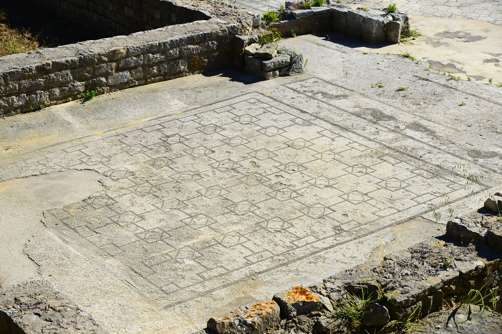
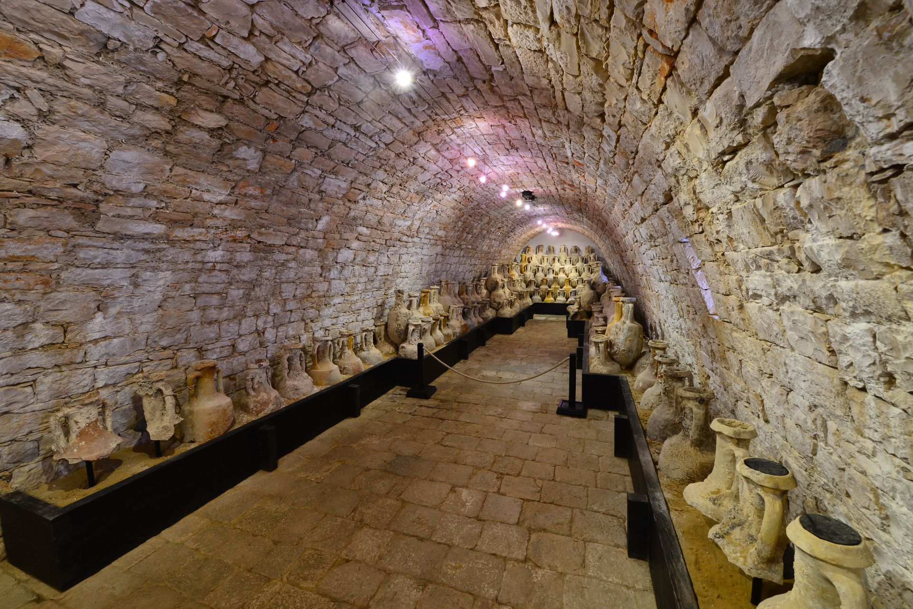

Zbirka helenističkih spomenika koju je također postavio Arheološki muzej iz Splita, najveća je takva zbirka u Hrvatskoj.
U Gospinoj batariji, glavnoj utvrdi koju je Austrija za vrijeme svojega vladanja početkom 19. stoljeća sagradila na otoku Visu, nalazi se Arheološki muzej.
Svaka od utvrda priča svoju priču o bogatoj povijesti ovog jedinstvenog otoka.
Ako želite upoznati povijest Visa, ove građevine morate posjetiti.